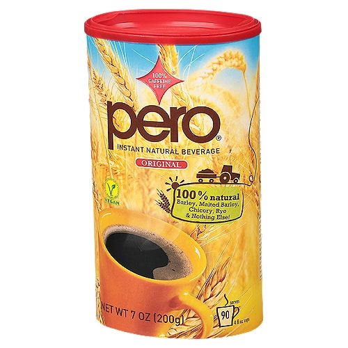

Page 2
If you're not a coffee drinker, here are some tea/alternatives that are pretty great too
- Lake Missoula Tea Co. Coconut Oolong tea
- Tazo wild orange tea
- Pero (it's made from barley, tastes like a more malty coffee without the caffeine)
- Green tea. Any brand, really, it's good for your heart.
